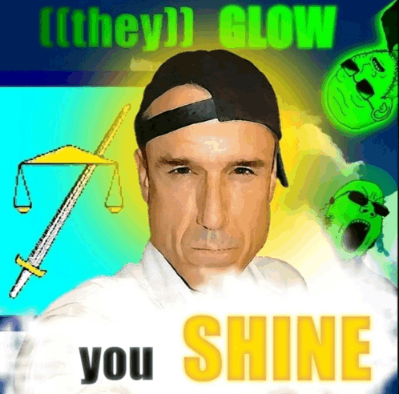
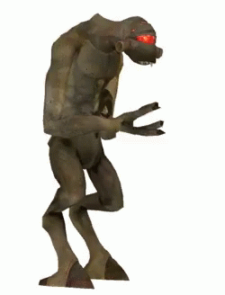
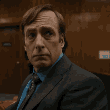
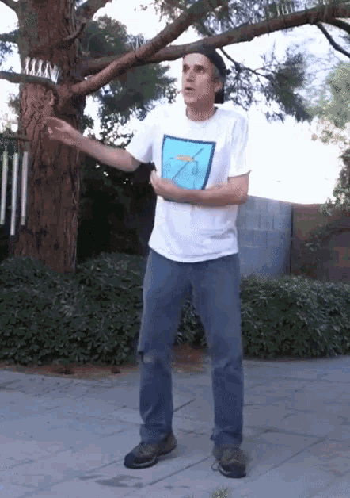

webberk

Matthew David McConaughey (/məˈkɒnəheɪ/ mə-KON-ə-hay; born November 4, 1969) is an American actor. He achieved his breakthrough with a supporting performance in the coming-of-age comedy Dazed and Confused (1993). After a number of supporting roles, his first success as a leading man came in the legal drama A Time to Kill (1996). His career progressed with lead roles in the science fiction film Contact (1997), the historical drama Amistad (1997), the war film U-571 (2000), and the epic science fiction film Interstellar (2014). In the 2000s, McConaughey became known for starring in romantic comedies, including The Wedding Planner (2001), How to Lose a Guy in 10 Days (2003), Failure to Launch (2006), Fool's Gold (2008), and Ghosts of Girlfriends Past (2009), establishing him as a sex symbol. In 2011, after a two-year hiatus from film acting, McConaughey began to appear in more dramatic roles, beginning with the legal drama The Lincoln Lawyer. In 2012, he gained wider praise for his roles as a stripper in Magic Mike and a fugitive in Mud. McConaughey's portrayal of Ron Woodroof, a cowboy diagnosed with AIDS, in the biopic Dallas Buyers Club (2013) earned him widespread critical acclaim and numerous accolades, including the Academy Award for Best Actor. He followed it with a supporting role in The Wolf of Wall Street (2013), and a starring role as Rust Cohle in the first season of HBO's crime anthology series True Detective (2014), for which he was nominated for the Primetime Emmy Award for Outstanding Lead Actor in a Drama Series. His subsequent film roles include starring in Interstellar (2014) and The Gentlemen (2019), as well as voice work in Kubo and the Two Strings (2016), Sing (2016), and Sing 2 (2021).



